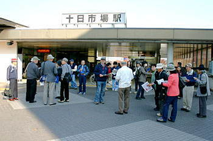

| 横浜市歴史博物館のガイドボランティア１期の久世さんから、緑区にある発掘中の古墳を見学しませんかと、お誘いを受けた。 ガイドボランティア１期、２期、３期、それに地元の方々、合計３１人余りが、見学に参加した。 |
| 遺跡はどこに？ |
|  | Ａ | |
| ＪＲ横浜線十日市場駅に集合 | 遺跡は、横浜線と東名高速道が交差する付近にある |
| Ａ | ||
| 近くに流れる恩田川 | 「この辺りは遺跡が多いです」と説明する久世さん |
| 恩田川の北側には、いくつかの遺跡がある ① 西八朔古墳（５世紀後半の円墳で、横浜市域最古の須恵器の大甕が出土。1997／98年の調査後消滅） ② しらとり台古墳（未調査のまま消滅） ③稲ヶ原遺跡（縄文中期、弥生末期の大集落。弥生末の24m四方の巨大方形周溝墓が出ている） ④藤林遺跡（弥生中期後半の環濠集落と推定、未調査） |
| 目指す「北門古墳群」は、恩田川の南側の小高い丘の上にある |
| どんな遺跡か？ |
| 「北門（ぼっかど）古墳群」の全景 手前の大きいのが1号墳、その向うが５号墳、その左が２号墳、４号墳は線路の下、３号墳は線路の向う側、 少し見える線路は、ＪＲ横浜線（左が十日市場駅方向、右が長津田駅方向）、ほぼ西から東を見る。 この古墳は、石室の形式と出土品から考えて、７世紀前半のものと推測されるという。 |
| Ａ | ||
| １号墳の石室を説明する盤古堂考古学研究所所長の滝澤亮氏。１号墳には墳丘が一部残存し、周溝が確認された。径約２０ｍの円墳とみられる。 | １号墳の石室の内部を調査中。石室は床面は川原石、壁面は泥岩切石。泥岩は脆く、発掘時に天井は陥没していたという。 |
 |
Ａ | |
| ２号墳。墳丘は残存せず、周溝は確認されたという。 |
現場にはトランシットが１台ある他は、設備は見当たらない。発掘はすべて手掘りのようである。 |
| Ａ | ||
| 新しく発見された５号墳の石室を西側から見る。石室は、床面は川原石、壁面は泥岩切石で出来ている。 | ５号墳の石室を反対側（東側）から見る |
| どんな遺物か？ |